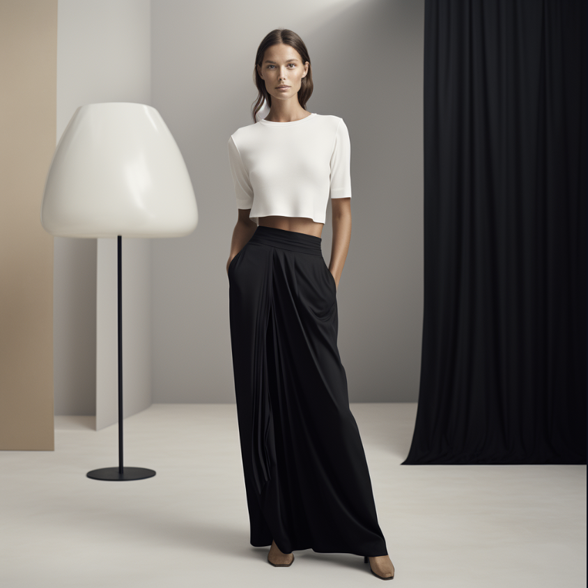
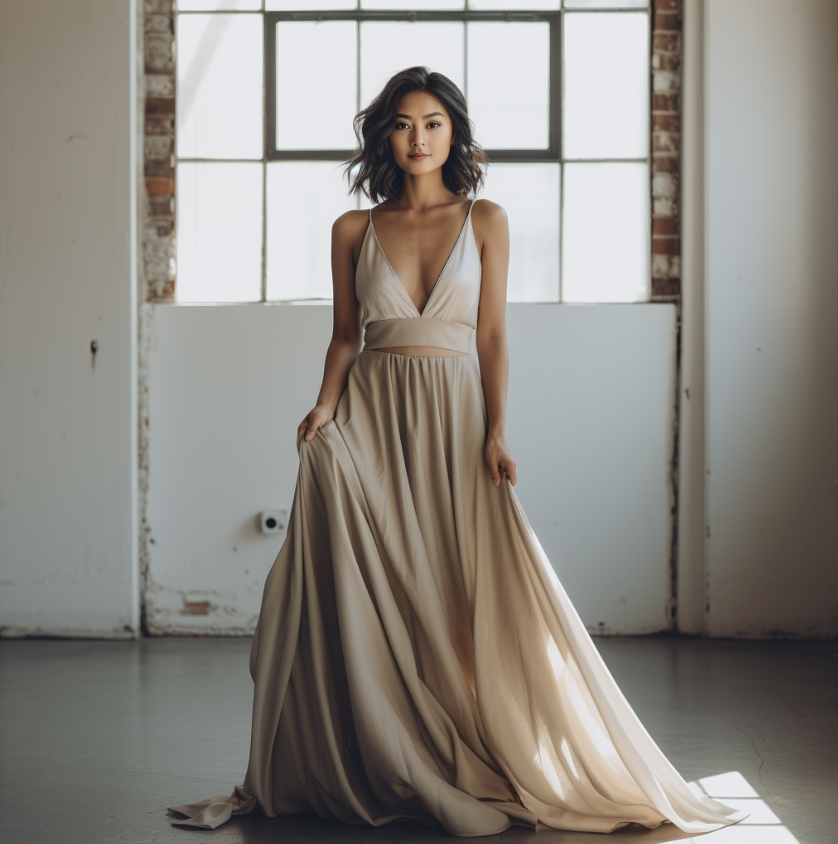

At Sutencia, we are passionate about helping you discover the
perfect pieces that express your unique style. Our curated
collection is a celebration of beauty, elegance, sustainability
and individuality, ensuring you look and feel your best on every
occasion. What Sets Us Apart:
Unique Styles:
Explore an array of skirts and dresses, each carefully selected
for its one-of-a-kind design. Whether you're seeking a
show-stopping evening gown, a flowy summer dress, or a versatile
skirt for everyday wear, we've got you covered.
Quality Selection:
We believe in quality over quantity. Our team handpicks each item
in our collection, focusing on craftsmanship, materials, and
attention to detail to ensure you receive the best.


Unmatched Elegance:
Whether you're aiming for a classic and timeless look or prefer to
make a bold statement, our pieces are designed to enhance your
personal style and make you stand out from the crowd.
Sustainability:
We care about our planet. Most of our products are vintage and
second hand pieces, or sourced from eco-friendly and sustainable
materials, promoting responsible fashion choices.
Your Journey Starts Here.
Explore our extensive range of skirts and dresses, thoughtfully
categorized for easy navigation.
Get inspired by our fashion blog, offering tips, trends, and
styling advice.
Connect with us through our contact page for any inquiries or
assistance.
Join our community of satisfied customers who have shared their
stories and reviews.
At Sutencia, fashion is not just clothing; it's an expression of
who you are. We invite you to browse our collection, find pieces
that resonate with your style, and embark on a fashion journey
that celebrates your individuality.
Thank you for visiting, and we look forward to helping you
discover the beauty and uniqueness that awaits you.